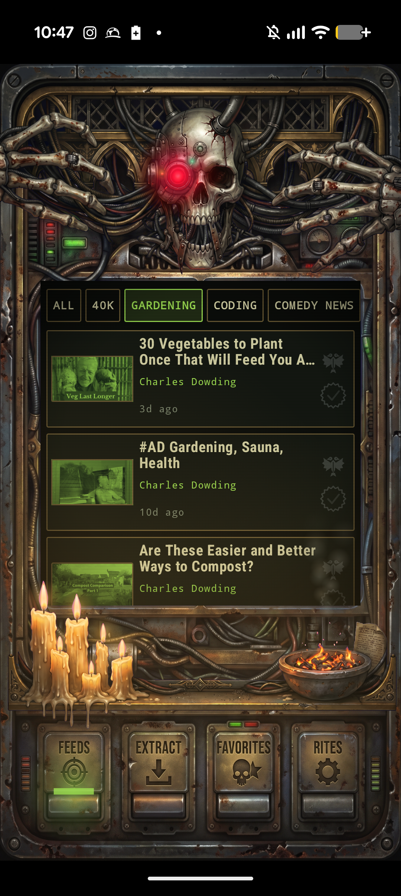
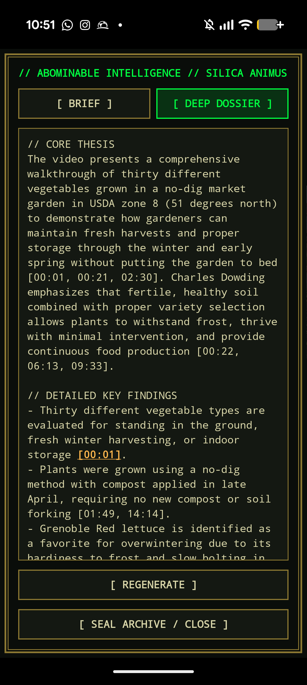
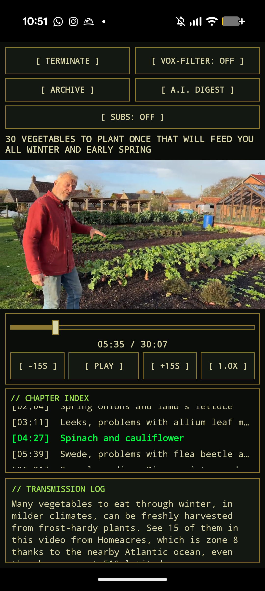
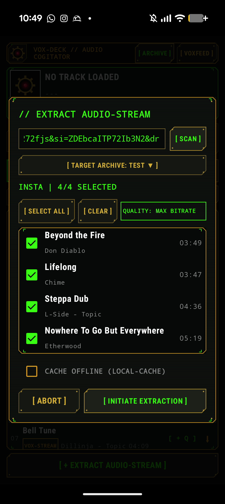
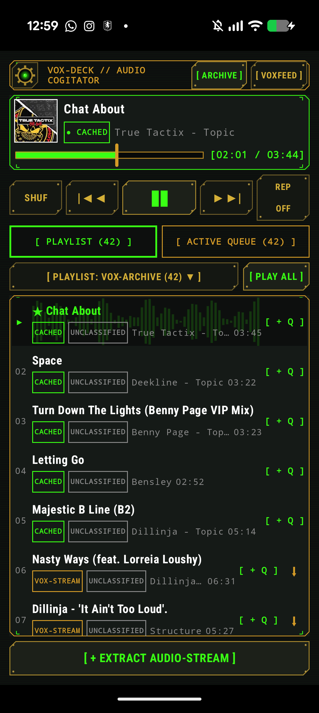

VoxPlayer
Reclaim your attention from YouTube's algorithm. A local-first Android RSS feed reader, on-demand Gemini AI video summarizer, and offline audio deck with zero Shorts, recommendations, or Google account tracking.
DOWNLOAD LATEST APK (ANDROID 8.0+) Open source on GitHub (thelillypond/VoxPlayer)[01] PURE RSS FEED
Subscribe directly to channels without logging in. No home feed, no Shorts, and no autoplay rabbit holes.
[02] GEMINI AI TRIAGE
Plug in your own free Gemini API key to scan videos at Brief, Standard, or Deep depth before committing your time.
[03] CHAPTERS & KEY JUMPS
View full video chapters at a glance or tap key points in the AI scan readout to cut straight to the exact moment of interest.
[04] AUDIO DECK
Cache maximum-bitrate audio locally for offline listening with playlists, favourites, genre tags, and live equalizer bars. Videos get the same custom playlists.
// INTERFACE TELEMETRY

[RSS CHANNEL FEED]
[GEMINI AI SCAN]
[CHAPTERS & KEY JUMPS]
[AUDIO EXTRACTION]
[AUDIO DECK]// SETUP: FREE GEMINI API KEY
- Open Google AI Studio (aistudio.google.com/api-keys) and sign in with any Google account.
- Click Create API key in the top-right corner and select or create a Google Cloud project when prompted (no billing or credit card required for the free tier).
- Copy the generated API key string.
- Open VoxPlayer, go to Settings, paste the key into the Gemini API Key field, and save.
PRIVACY NOTE: Your key is stored locally on your device and sent only directly to Google's Gemini API when you trigger an on-demand video scan.